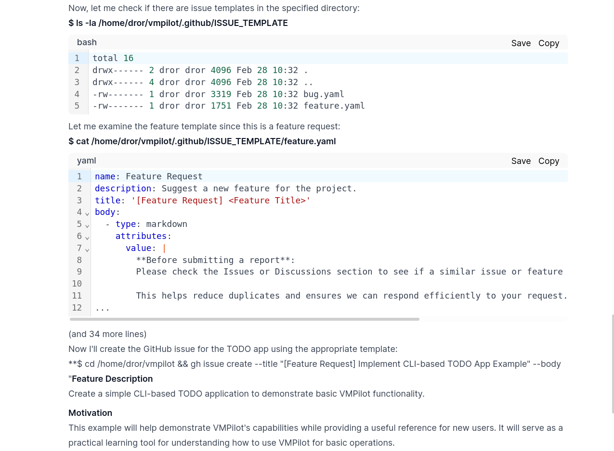
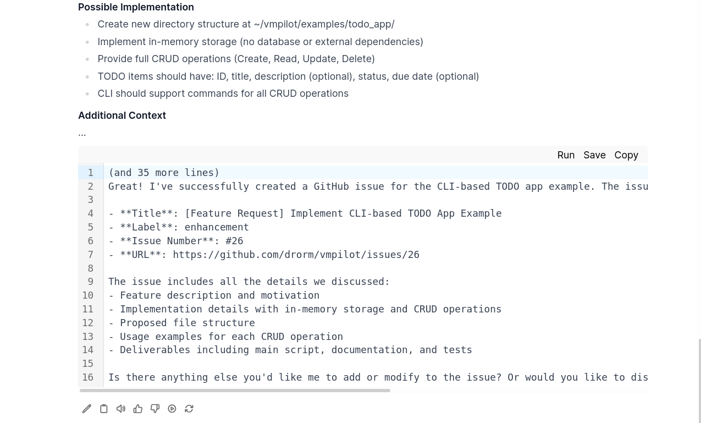
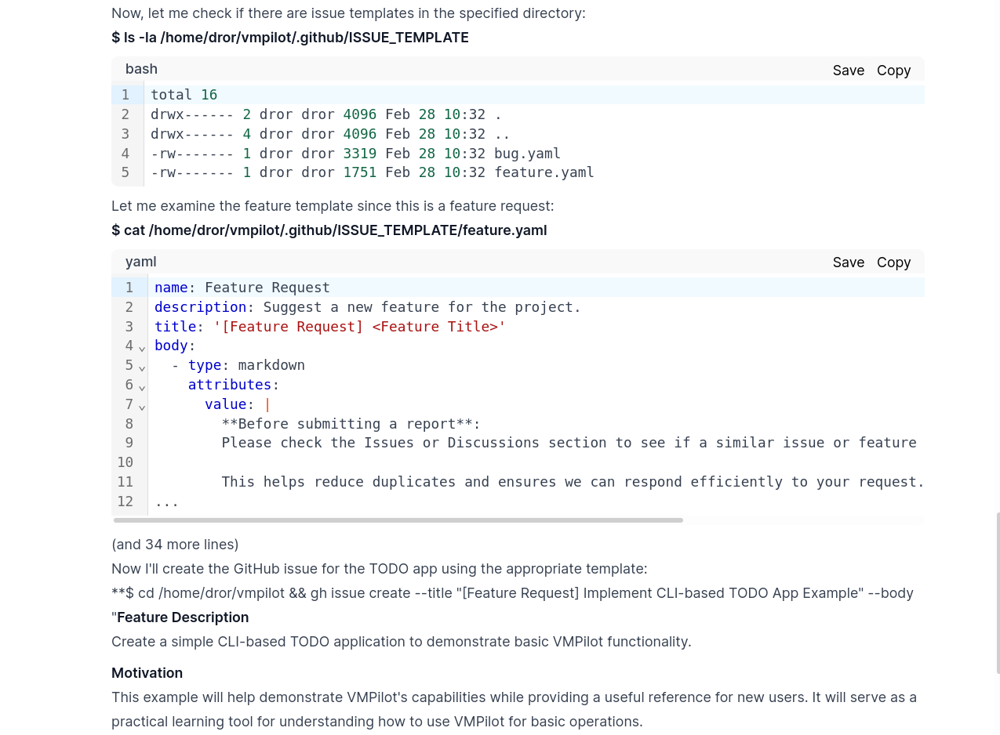
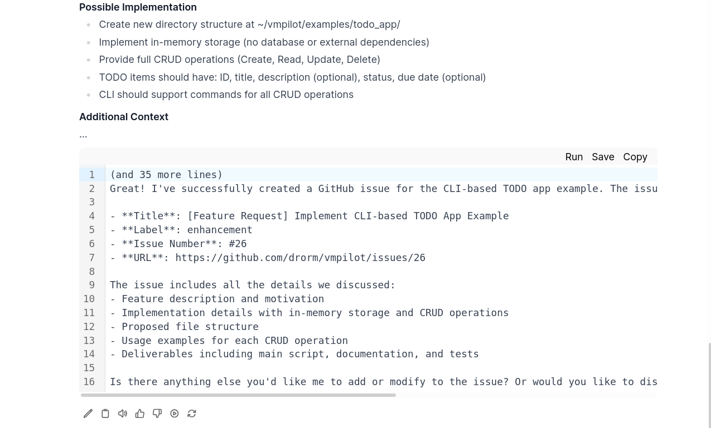

Example: Create GitHub Issue
Objective: Use VMPilot to create a new GitHub issue.
Workflow
Step 1: Initial Request and Planning
- We begin by telling VMPilot that we want to create a GitHub issue
- Note that we specifically instruct it not to create files or the issue itself initially
- This is because VMPilot is designed to take action, and we first want to discuss and plan


Step 2: Issue Creation Process
- After sufficient planning and back-and-forth to ensure all details are correct, we instruct VMPilot to create the issue
- The process involves several steps:
- VMPilot examines the issue plugin to understand how to create an issue
- It checks the feature template to identify required fields
- It runs the appropriate GitHub CLI command to create the issue
- Finally, it reports back on the operation's success
 



Key Points
- VMPilot can interact with GitHub's API through the GitHub CLI
- The collaborative planning process ensures the issue meets requirements before creation
- The final result can be verified on GitHub: Issue #26
- This example demonstrates VMPilot's ability to integrate with external tools and services